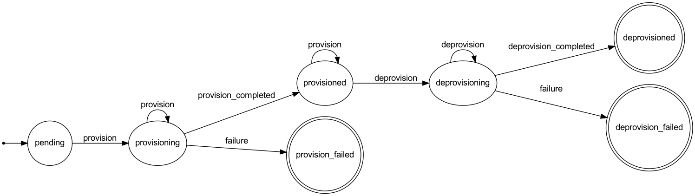

Class: Resource
- Inherits:
-
ApplicationRecord
- Object
- ActiveRecord::Base
- ApplicationRecord
- Resource
- Defined in:
- app/models/resource.rb
Overview
Class to model resource instances.
State Machines
This class contains 1 state machine(s).state
This machine models provisioning states and valid transitions for a resource life cycle.
Instance Method Summary collapse
-
#average_retention ⇒ Integer
Returns the average interval of retention for log frames, expresed in seconds.
-
#fresh_access_token ⇒ String?
Returns a fresh OAuth access token.
-
#log_messages ⇒ Array<LogMessage>
Returns an array with all `LogMessage` instances for this resource.
-
#log_messages_count(refresh: false) ⇒ Integer
Returns the count of log messages stored for this resource.
Instance Method Details
#average_retention ⇒ Integer
Returns the average interval of retention for log frames, expresed in seconds.
92 93 94 95 96 97 98 |
# File 'app/models/resource.rb', line 92 def average_retention log_frames_timespan = Time.current - (log_frames.minimum(:created_at) || created_at) = / log_frames_timespan return ( * 1_000) if .zero? ( / ).to_i end |
#fresh_access_token ⇒ String?
Returns a fresh OAuth access token.
59 60 61 62 63 |
# File 'app/models/resource.rb', line 59 def fresh_access_token return access_token unless access_token_expired? Heroku::AuthorizationManager::TokenRefresher.call(self) end |
#log_messages ⇒ Array<LogMessage>
Returns an array with all `LogMessage` instances for this resource.
83 84 85 |
# File 'app/models/resource.rb', line 83 def log_frames.order(:created_at).map(&:log_messages).flatten end |
#log_messages_count(refresh: false) ⇒ Integer
Returns the count of log messages stored for this resource.
72 73 74 75 76 |
# File 'app/models/resource.rb', line 72 def (refresh: false) return @log_messages_count if @log_messages_count.present? && !refresh @log_messages_count = log_frames.sum(:message_count) end |